Zonal sections
Jens Daniel Müller
10 April, 2022
Last updated: 2022-04-10
Checks: 7 0
Knit directory: emlr_obs_analysis/analysis/
This reproducible R Markdown analysis was created with workflowr (version 1.7.0). The Checks tab describes the reproducibility checks that were applied when the results were created. The Past versions tab lists the development history.
Great! Since the R Markdown file has been committed to the Git repository, you know the exact version of the code that produced these results.
Great job! The global environment was empty. Objects defined in the global environment can affect the analysis in your R Markdown file in unknown ways. For reproduciblity it’s best to always run the code in an empty environment.
The command set.seed(20210412) was run prior to running the code in the R Markdown file. Setting a seed ensures that any results that rely on randomness, e.g. subsampling or permutations, are reproducible.
Great job! Recording the operating system, R version, and package versions is critical for reproducibility.
Nice! There were no cached chunks for this analysis, so you can be confident that you successfully produced the results during this run.
Great job! Using relative paths to the files within your workflowr project makes it easier to run your code on other machines.
Great! You are using Git for version control. Tracking code development and connecting the code version to the results is critical for reproducibility.
The results in this page were generated with repository version 537aff7. See the Past versions tab to see a history of the changes made to the R Markdown and HTML files.
Note that you need to be careful to ensure that all relevant files for the analysis have been committed to Git prior to generating the results (you can use wflow_publish or wflow_git_commit). workflowr only checks the R Markdown file, but you know if there are other scripts or data files that it depends on. Below is the status of the Git repository when the results were generated:
Ignored files:
Ignored: .Rhistory
Ignored: .Rproj.user/
Ignored: data/
Ignored: output/other/
Ignored: output/publication/
Unstaged changes:
Modified: analysis/_site.yml
Modified: code/Workflowr_project_managment.R
Note that any generated files, e.g. HTML, png, CSS, etc., are not included in this status report because it is ok for generated content to have uncommitted changes.
These are the previous versions of the repository in which changes were made to the R Markdown (analysis/reoccupation_zonal_sections.Rmd) and HTML (docs/reoccupation_zonal_sections.html) files. If you’ve configured a remote Git repository (see ?wflow_git_remote), click on the hyperlinks in the table below to view the files as they were in that past version.
| File | Version | Author | Date | Message |
|---|---|---|---|---|
| html | acad2e2 | jens-daniel-mueller | 2022-04-09 | Build site. |
| html | c3a6238 | jens-daniel-mueller | 2022-03-08 | Build site. |
| html | de557de | jens-daniel-mueller | 2022-01-28 | Build site. |
| Rmd | 0a2d89a | jens-daniel-mueller | 2022-01-28 | reoccupation filter implemented |
version_id_pattern <- "o"
config <- "MLR_basins"1 Read files
# identify required version IDs
Version_IDs_1 <- list.files(path = "/nfs/kryo/work/jenmueller/emlr_cant/observations",
pattern = paste0("v_1", "o"))
Version_IDs_2 <- list.files(path = "/nfs/kryo/work/jenmueller/emlr_cant/observations",
pattern = paste0("v_2", "o"))
Version_IDs_3 <- list.files(path = "/nfs/kryo/work/jenmueller/emlr_cant/observations",
pattern = paste0("v_3", "o"))
Version_IDs <- c(Version_IDs_1, Version_IDs_2, Version_IDs_3)
print(Version_IDs) [1] "v_1o01" "v_1o02" "v_1o03" "v_1o04" "v_1o05" "v_1o06" "v_2o01" "v_2o02"
[9] "v_2o03" "v_2o04" "v_2o05" "v_2o06" "v_3o01" "v_3o02" "v_3o03" "v_3o04"
[17] "v_3o05" "v_3o06"for (i_Version_IDs in Version_IDs) {
# i_Version_IDs <- Version_IDs[1]
print(i_Version_IDs)
path_version_data <-
paste(path_observations,
i_Version_IDs,
"/data/",
sep = "")
# load and join data files
dcant_zonal <-
read_csv(paste(path_version_data,
"dcant_zonal.csv",
sep = ""))
dcant_zonal_mod_truth <-
read_csv(paste(path_version_data,
"dcant_zonal_mod_truth.csv",
sep = ""))
dcant_zonal <- bind_rows(dcant_zonal,
dcant_zonal_mod_truth)
dcant_profile <-
read_csv(paste(path_version_data,
"dcant_profile.csv",
sep = ""))
dcant_profile_mod_truth <-
read_csv(paste(path_version_data,
"dcant_profile_mod_truth.csv",
sep = ""))
dcant_profile <- bind_rows(dcant_profile,
dcant_profile_mod_truth)
dcant_budget_basin_AIP_layer <-
read_csv(paste(path_version_data,
"dcant_budget_basin_AIP_layer.csv",
sep = ""))
dcant_zonal_bias <-
read_csv(paste(path_version_data,
"dcant_zonal_bias.csv",
sep = ""))
dcant_zonal <- dcant_zonal %>%
mutate(Version_ID = i_Version_IDs)
dcant_profile <- dcant_profile %>%
mutate(Version_ID = i_Version_IDs)
dcant_budget_basin_AIP_layer <- dcant_budget_basin_AIP_layer %>%
mutate(Version_ID = i_Version_IDs)
dcant_zonal_bias <- dcant_zonal_bias %>%
mutate(Version_ID = i_Version_IDs)
params_local <-
read_rds(paste(path_version_data,
"params_local.rds",
sep = ""))
params_local <- bind_cols(
Version_ID = i_Version_IDs,
MLR_basins := str_c(params_local$MLR_basins, collapse = "|"),
tref1 = params_local$tref1,
tref2 = params_local$tref2)
tref <- read_csv(paste(path_version_data,
"tref.csv",
sep = ""))
params_local <- params_local %>%
mutate(median_year_1 = sort(tref$median_year)[1],
median_year_2 = sort(tref$median_year)[2],
duration = median_year_2 - median_year_1,
period = paste(median_year_1, "-", median_year_2))
if (exists("dcant_zonal_all")) {
dcant_zonal_all <- bind_rows(dcant_zonal_all, dcant_zonal)
}
if (!exists("dcant_zonal_all")) {
dcant_zonal_all <- dcant_zonal
}
if (exists("dcant_profile_all")) {
dcant_profile_all <- bind_rows(dcant_profile_all, dcant_profile)
}
if (!exists("dcant_profile_all")) {
dcant_profile_all <- dcant_profile
}
if (exists("dcant_budget_basin_AIP_layer_all")) {
dcant_budget_basin_AIP_layer_all <-
bind_rows(dcant_budget_basin_AIP_layer_all,
dcant_budget_basin_AIP_layer)
}
if (!exists("dcant_budget_basin_AIP_layer_all")) {
dcant_budget_basin_AIP_layer_all <- dcant_budget_basin_AIP_layer
}
if (exists("dcant_zonal_bias_all")) {
dcant_zonal_bias_all <- bind_rows(dcant_zonal_bias_all, dcant_zonal_bias)
}
if (!exists("dcant_zonal_bias_all")) {
dcant_zonal_bias_all <- dcant_zonal_bias
}
if (exists("params_local_all")) {
params_local_all <- bind_rows(params_local_all, params_local)
}
if (!exists("params_local_all")) {
params_local_all <- params_local
}
}[1] "v_1o01"
[1] "v_1o02"
[1] "v_1o03"
[1] "v_1o04"
[1] "v_1o05"
[1] "v_1o06"
[1] "v_2o01"
[1] "v_2o02"
[1] "v_2o03"
[1] "v_2o04"
[1] "v_2o05"
[1] "v_2o06"
[1] "v_3o01"
[1] "v_3o02"
[1] "v_3o03"
[1] "v_3o04"
[1] "v_3o05"
[1] "v_3o06"rm(dcant_zonal, dcant_zonal_bias, dcant_zonal_mod_truth,
dcant_budget_basin_AIP_layer,
tref)all_predictors <- c("saltempaouoxygenphosphatenitratesilicate")
params_local_all <- params_local_all %>%
mutate(MLR_predictors = str_remove_all(all_predictors,
MLR_predictors))2 Uncertainty limit
sd_uncertainty_limit <- 1.53 Individual cases
3.1 Absoulte values
dcant_zonal_all %>%
filter(data_source %in% c("mod", "obs")) %>%
group_by(basin_AIP, data_source) %>%
group_split() %>%
# head(1) %>%
map(
~ p_section_zonal_continous_depth(
df = .x,
var = "dcant",
plot_slabs = "n",
subtitle_text = paste(
"data_source: ",
unique(.x$data_source),
"| basin:",
unique(.x$basin_AIP)
)
) +
facet_grid(MLR_basins ~ period)
)[[1]]Warning: Removed 20164 rows containing non-finite values (stat_contour_filled).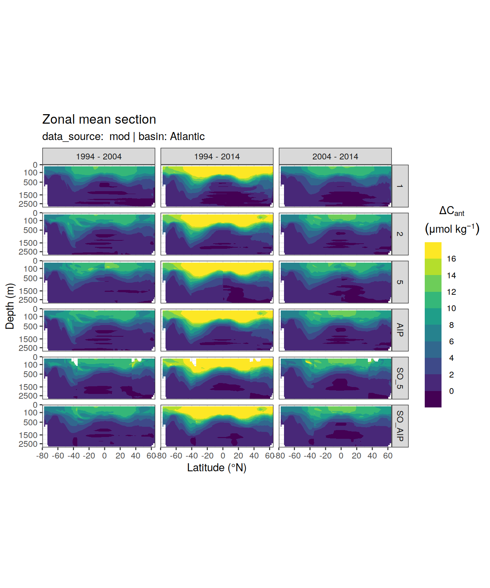
[[2]]Warning: Removed 9522 rows containing non-finite values (stat_contour_filled).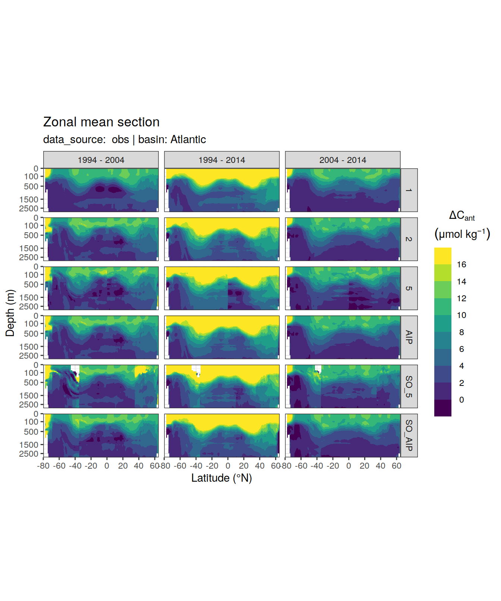
[[3]]Warning: Removed 13338 rows containing non-finite values (stat_contour_filled).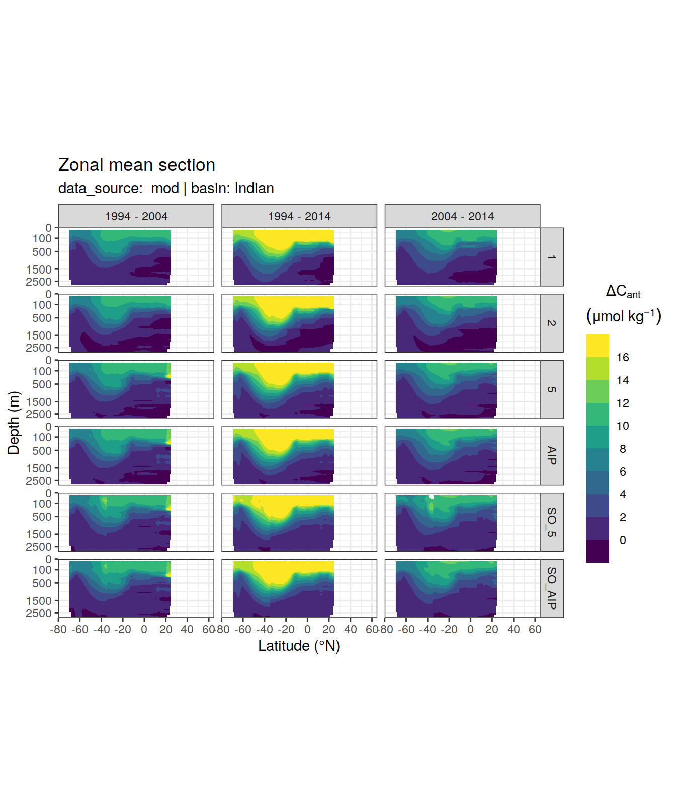
[[4]]Warning: Removed 6354 rows containing non-finite values (stat_contour_filled).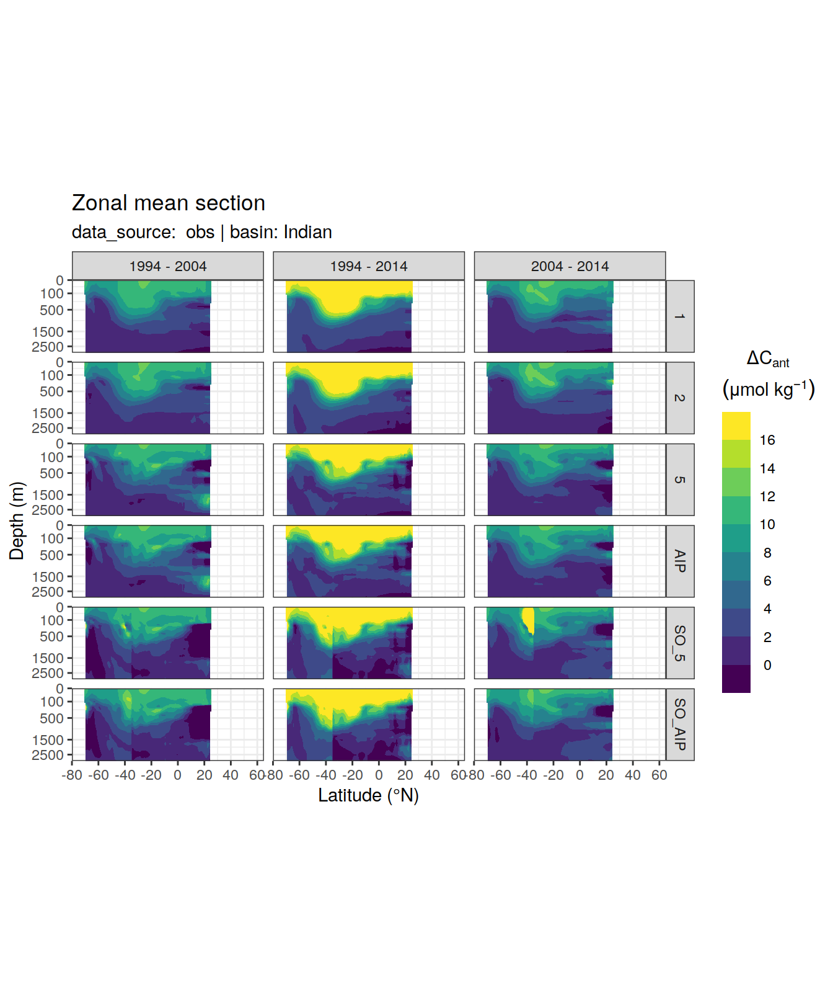
[[5]]Warning: Removed 22212 rows containing non-finite values (stat_contour_filled).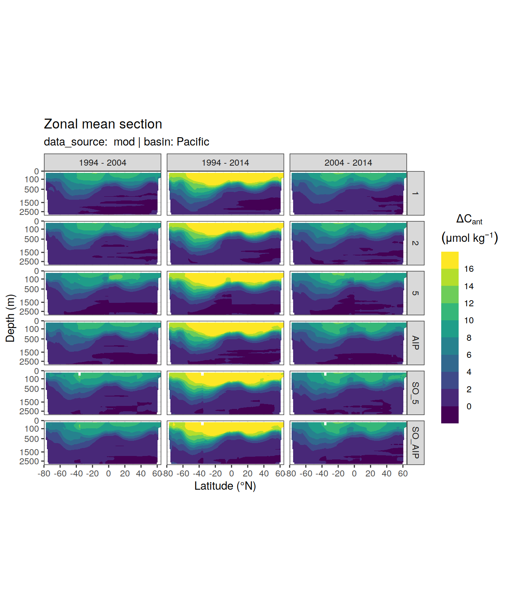
[[6]]Warning: Removed 10782 rows containing non-finite values (stat_contour_filled).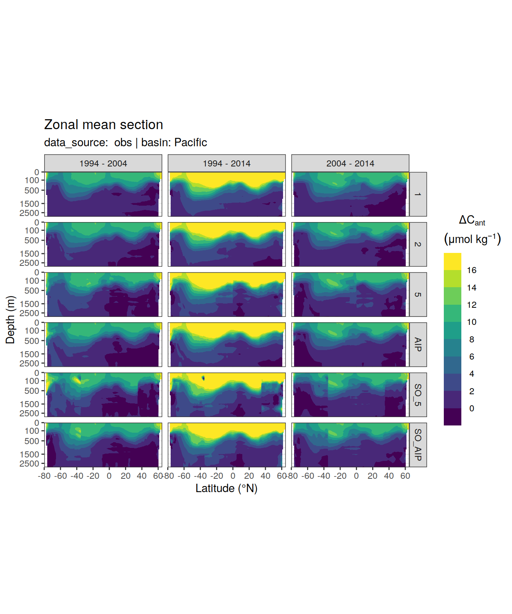
p_dcant_Indian_1994_2004 <-
dcant_zonal_all %>%
filter(data_source %in% c("obs"),
period == "1994 - 2004",
basin_AIP == "Indian") %>%
p_section_zonal_continous_depth(var = "dcant",
plot_slabs = "n",
subtitle_text = "Indian Ocean") +
facet_grid(MLR_basins ~ period)
# ggsave(plot = p_dcant_Indian_1994_2004,
# path = "output/other",
# filename = "zonal_indian_1994_2004.png",
# height = 8,
# width = 5)
p_dcant_Indian_2004_2014 <-
dcant_zonal_all %>%
filter(data_source %in% c("obs"),
period == "2004 - 2014",
basin_AIP == "Pacific") %>%
p_section_zonal_continous_depth(var = "dcant",
plot_slabs = "n",
subtitle_text = "Pacific Ocean") +
facet_grid(MLR_basins ~ period)
# ggsave(plot = p_dcant_Indian_2004_2014,
# path = "output/other",
# filename = "zonal_Pacific_2004_2014.png",
# height = 8,
# width = 5)3.2 Biases
dcant_zonal_bias_all %>%
group_by(basin_AIP) %>%
group_split() %>%
# head(1) %>%
map(
~ p_section_zonal_continous_depth(
df = .x,
var = "dcant_bias",
col = "divergent",
plot_slabs = "n",
subtitle_text = paste("basin:",
unique(.x$basin_AIP)
)
) +
facet_grid(MLR_basins ~ period)
)[[1]]Warning: Removed 20380 rows containing non-finite values (stat_contour_filled).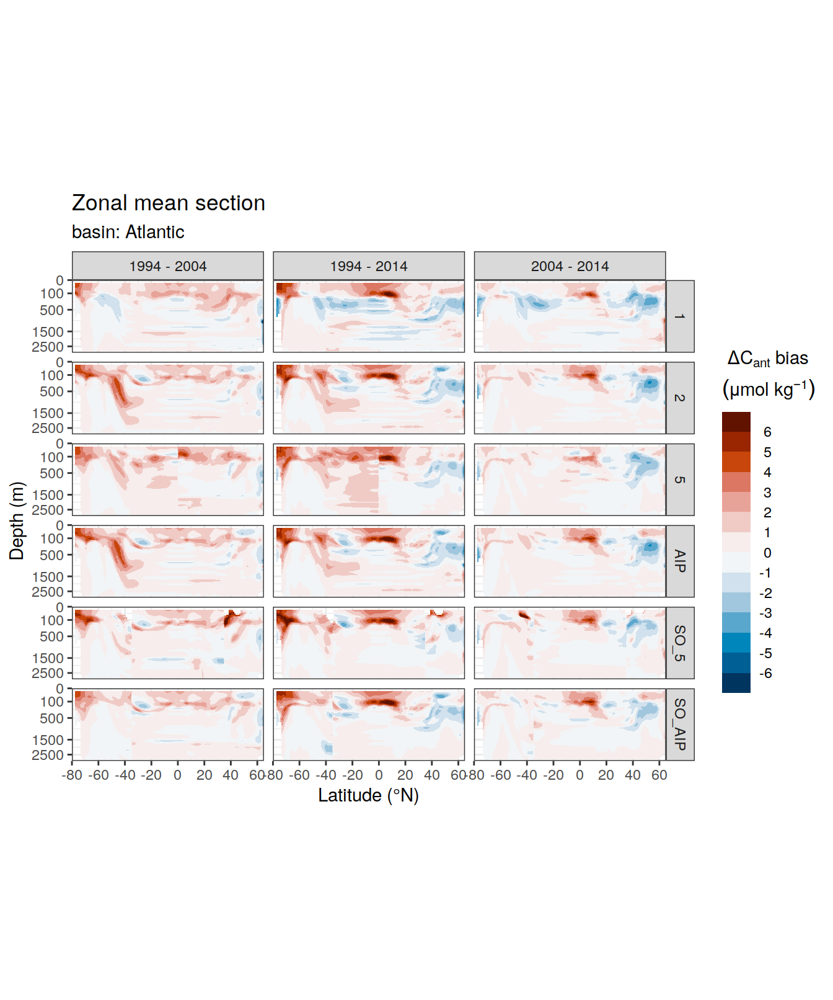
[[2]]Warning: Removed 13346 rows containing non-finite values (stat_contour_filled).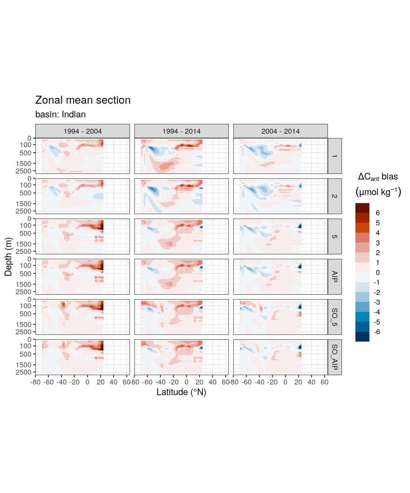
[[3]]Warning: Removed 22242 rows containing non-finite values (stat_contour_filled).
3.2.1 Density distribution
dcant_zonal_bias_all %>%
ggplot(aes(dcant_bias, col = MLR_basins)) +
scale_color_brewer(palette = "Dark2") +
geom_vline(xintercept = 0) +
geom_density() +
facet_grid(period ~.) +
coord_cartesian(xlim = c(-10, 10))Warning: Removed 254 rows containing non-finite values (stat_density).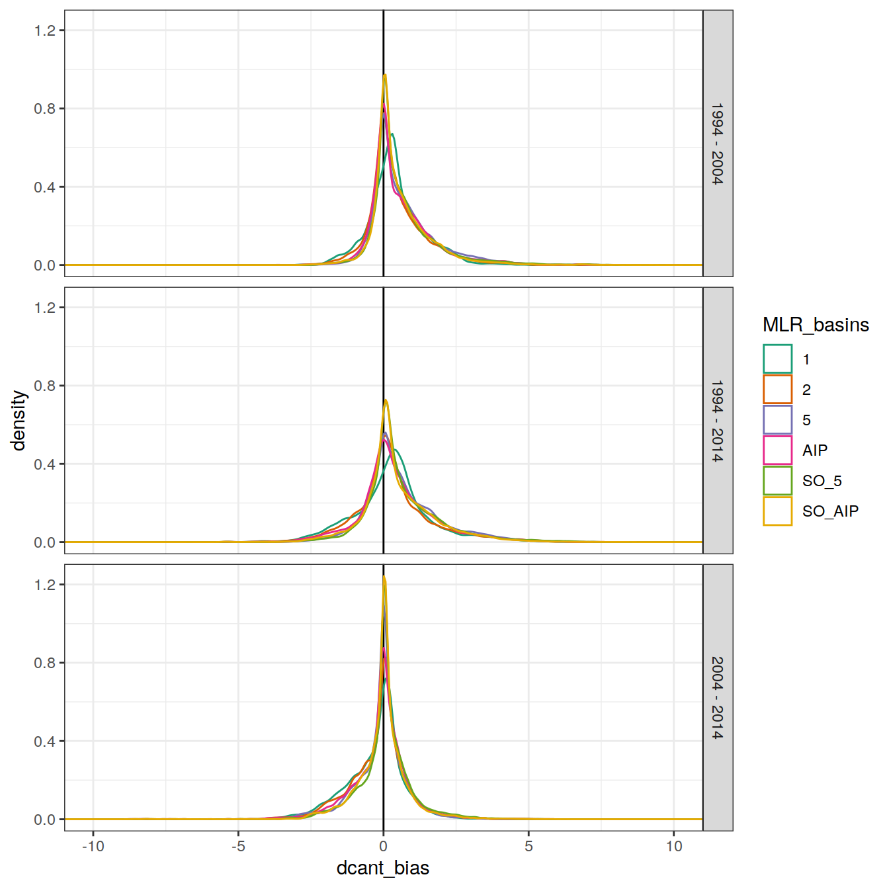
| Version | Author | Date |
|---|---|---|
| de557de | jens-daniel-mueller | 2022-01-28 |
3.3 Bias correlation eras
dcant_zonal_bias_all_corr <- dcant_zonal_bias_all %>%
select(lat, depth, basin_AIP, dcant_bias, MLR_basins, period) %>%
pivot_wider(names_from = period,
values_from = dcant_bias,
names_prefix = "dcant_bias ")
dcant_zonal_bias_all_corr %>%
ggplot(aes(`dcant_bias 1994 - 2004`, `dcant_bias 2004 - 2014`)) +
geom_vline(xintercept = 0) +
geom_hline(yintercept = 0) +
geom_bin2d() +
coord_fixed() +
facet_grid(MLR_basins ~ basin_AIP) +
scale_fill_viridis_c()Warning: Removed 125 rows containing non-finite values (stat_bin2d).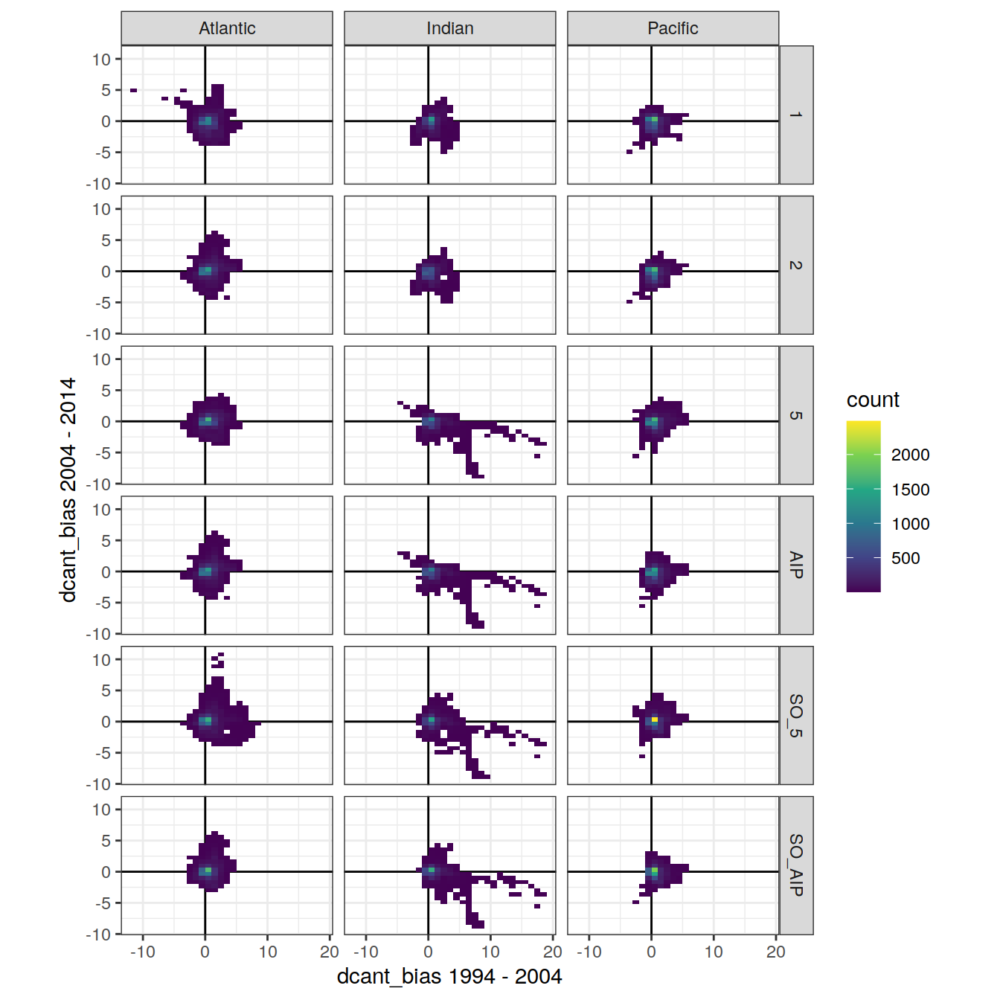
| Version | Author | Date |
|---|---|---|
| de557de | jens-daniel-mueller | 2022-01-28 |
3.4 Concentration profiles
3.4.1 Data source
dcant_profile_all %>%
group_split(period) %>%
map(
~ ggplot(data = .x,
aes(
dcant, depth,
col = data_source, fill = data_source
)) +
geom_hline(yintercept = params_global$inventory_depth_standard) +
geom_vline(xintercept = 0) +
geom_ribbon(
aes(xmin = dcant - dcant_sd,
xmax = dcant + dcant_sd),
alpha = 0.2,
col = "transparent"
) +
geom_path() +
scale_y_reverse() +
labs(title = paste("period", unique(.x$period))) +
facet_grid(MLR_basins ~ basin_AIP)
)[[1]]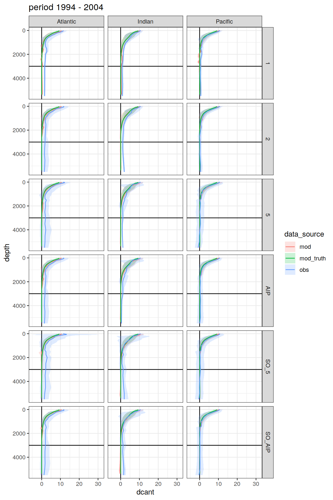
| Version | Author | Date |
|---|---|---|
| de557de | jens-daniel-mueller | 2022-01-28 |
[[2]]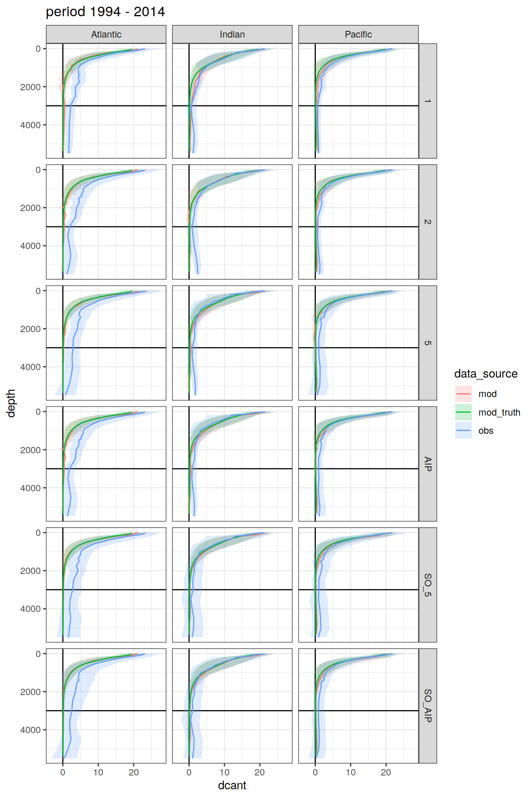
| Version | Author | Date |
|---|---|---|
| de557de | jens-daniel-mueller | 2022-01-28 |
[[3]]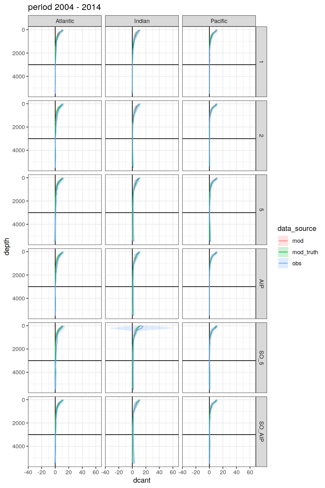
| Version | Author | Date |
|---|---|---|
| de557de | jens-daniel-mueller | 2022-01-28 |
3.4.2 Basin separation
dcant_profile_all %>%
group_split(period) %>%
map(
~ ggplot(data = .x,
aes(
dcant, depth,
col = MLR_basins, fill = MLR_basins
)) +
geom_hline(yintercept = params_global$inventory_depth_standard) +
geom_vline(xintercept = 0) +
geom_path() +
scale_y_reverse() +
labs(title = paste("period", unique(.x$period))) +
facet_grid(data_source ~ basin_AIP)
)[[1]]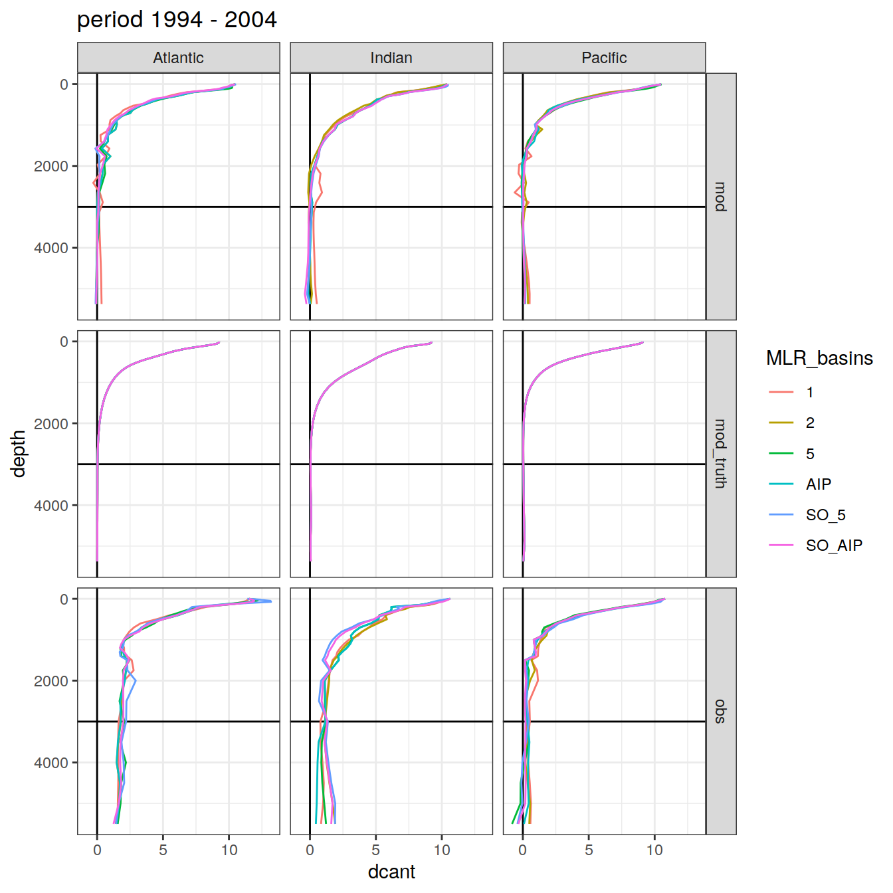
| Version | Author | Date |
|---|---|---|
| de557de | jens-daniel-mueller | 2022-01-28 |
[[2]]
| Version | Author | Date |
|---|---|---|
| de557de | jens-daniel-mueller | 2022-01-28 |
[[3]]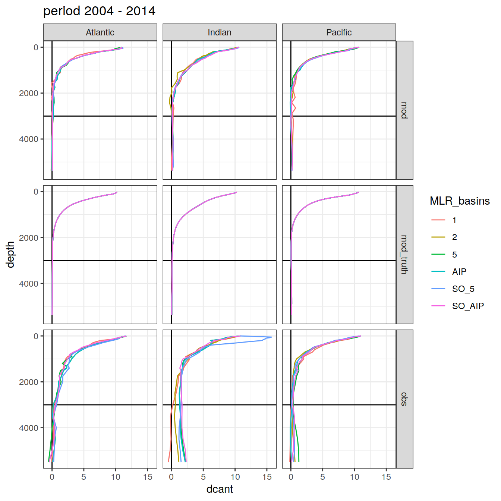
| Version | Author | Date |
|---|---|---|
| de557de | jens-daniel-mueller | 2022-01-28 |
3.4.3 Era
dcant_profile_all %>%
arrange(depth) %>%
filter(period != "1994 - 2014") %>%
group_split(data_source) %>%
map(
~ ggplot(
data = .x,
aes(
dcant,
depth,
col = period,
group = interaction(MLR_basins, period)
)
) +
geom_hline(yintercept = params_global$inventory_depth_standard) +
geom_vline(xintercept = 0) +
geom_path() +
scale_y_reverse() +
labs(title = paste("data_source", unique(.x$data_source))) +
facet_grid(. ~ basin_AIP)
)[[1]]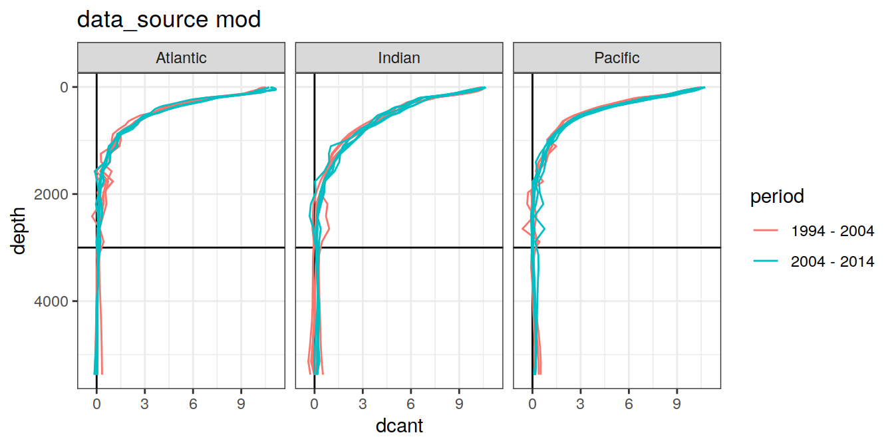
| Version | Author | Date |
|---|---|---|
| de557de | jens-daniel-mueller | 2022-01-28 |
[[2]]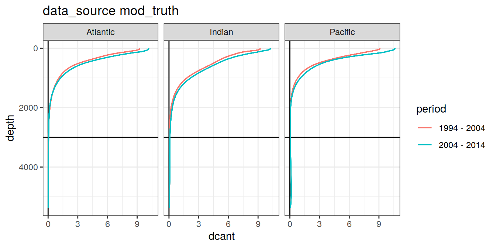
| Version | Author | Date |
|---|---|---|
| de557de | jens-daniel-mueller | 2022-01-28 |
[[3]]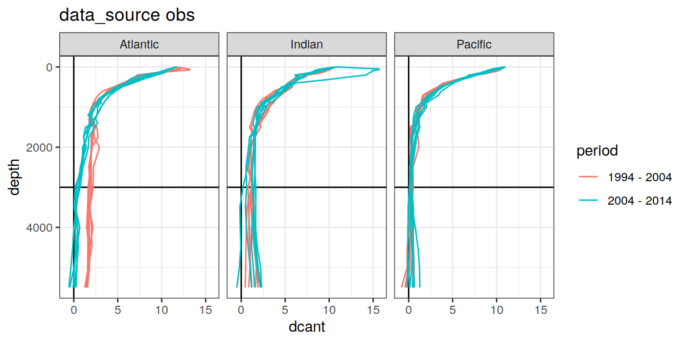
| Version | Author | Date |
|---|---|---|
| de557de | jens-daniel-mueller | 2022-01-28 |
3.5 Layer budgets
dcant_budget_basin_AIP_layer_all %>%
filter(estimate == "dcant") %>%
mutate(dcant = value,
inv_depth = fct_inorder(as.factor(inv_depth))) %>%
group_split(period) %>%
# head(1) %>%
map(
~ ggplot(data = .x,
aes(dcant, inv_depth,
fill = MLR_basins)) +
geom_vline(xintercept = 0) +
geom_col(position = "dodge") +
scale_y_discrete(limits = rev) +
scale_fill_brewer(palette = "Dark2") +
labs(title = paste("period", unique(.x$period))) +
facet_grid(data_source ~ basin_AIP)
)[[1]]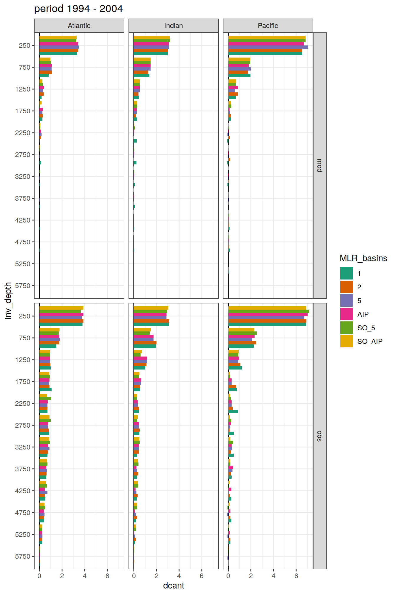
| Version | Author | Date |
|---|---|---|
| de557de | jens-daniel-mueller | 2022-01-28 |
[[2]]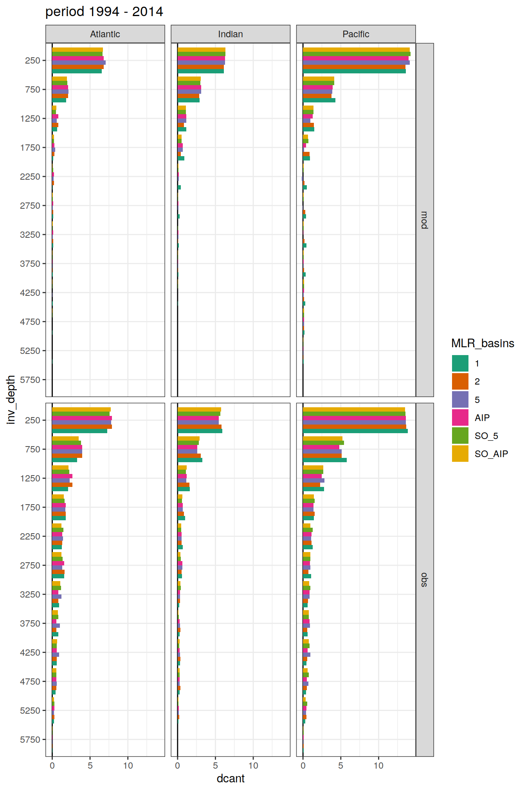
| Version | Author | Date |
|---|---|---|
| de557de | jens-daniel-mueller | 2022-01-28 |
[[3]]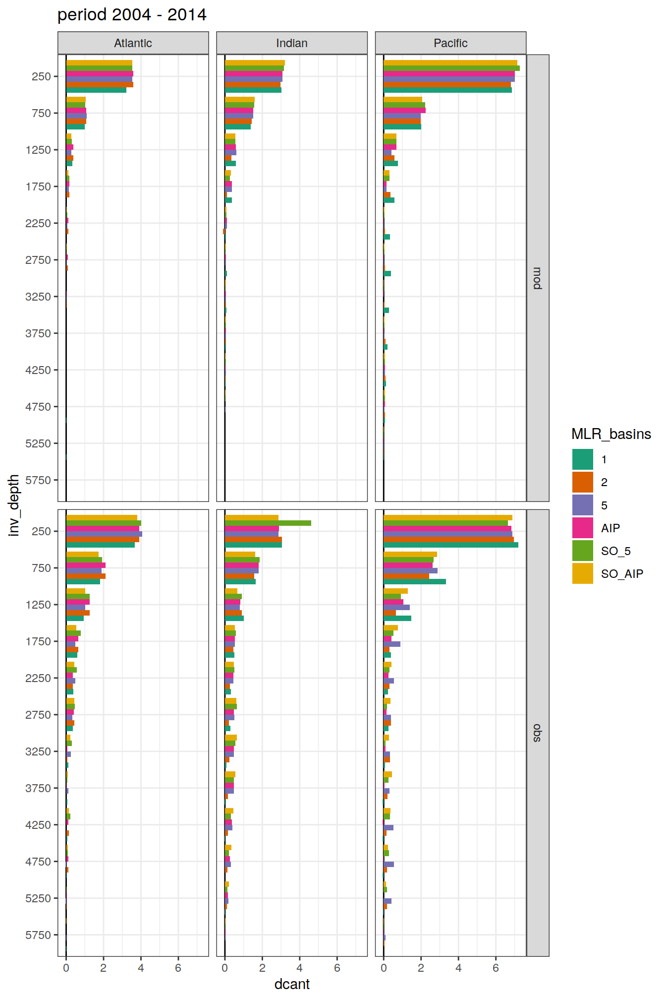
| Version | Author | Date |
|---|---|---|
| de557de | jens-daniel-mueller | 2022-01-28 |
4 Ensemble
dcant_zonal_ensemble <- dcant_zonal_all %>%
filter(data_source %in% c("mod", "obs")) %>%
group_by(lat, depth, basin_AIP, data_source, period) %>%
summarise(
dcant_ensemble_mean = mean(dcant),
dcant_sd = sd(dcant),
dcant_range = max(dcant) - min(dcant)
) %>%
ungroup()`summarise()` has grouped output by 'lat', 'depth', 'basin_AIP', 'data_source'. You can override using the `.groups` argument.dcant_budget_basin_AIP_layer_ensemble <-
dcant_budget_basin_AIP_layer_all %>%
mutate(inv_depth = fct_inorder(as.factor(inv_depth))) %>%
filter(data_source %in% c("mod", "obs"),
estimate == "dcant") %>%
rename(dcant = value) %>%
group_by(inv_depth, data_source, period, basin_AIP) %>%
summarise(
dcant_mean = mean(dcant),
dcant_sd = sd(dcant),
dcant_max = max(dcant),
dcant_min = min(dcant)
) %>%
ungroup()`summarise()` has grouped output by 'inv_depth', 'data_source', 'period'. You can override using the `.groups` argument.4.1 Mean
dcant_zonal_ensemble %>%
group_by(basin_AIP) %>%
group_split() %>%
# head(1) %>%
map(
~ p_section_zonal_continous_depth(
df = .x,
var = "dcant_ensemble_mean",
plot_slabs = "n",
subtitle_text = paste("basin:",
unique(.x$basin_AIP))
) +
facet_grid(data_source ~ period)
)[[1]]Warning: Removed 4953 rows containing non-finite values (stat_contour_filled).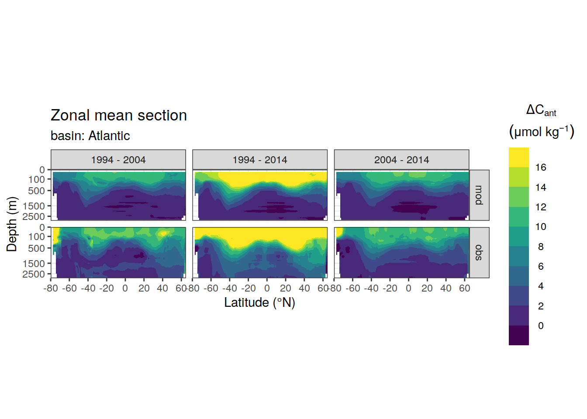
[[2]]Warning: Removed 3282 rows containing non-finite values (stat_contour_filled).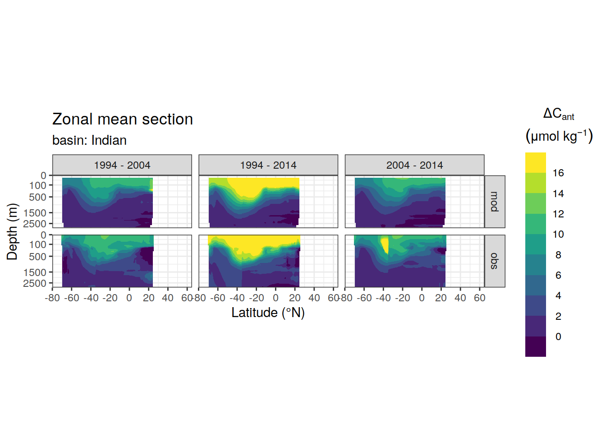
[[3]]Warning: Removed 5499 rows containing non-finite values (stat_contour_filled).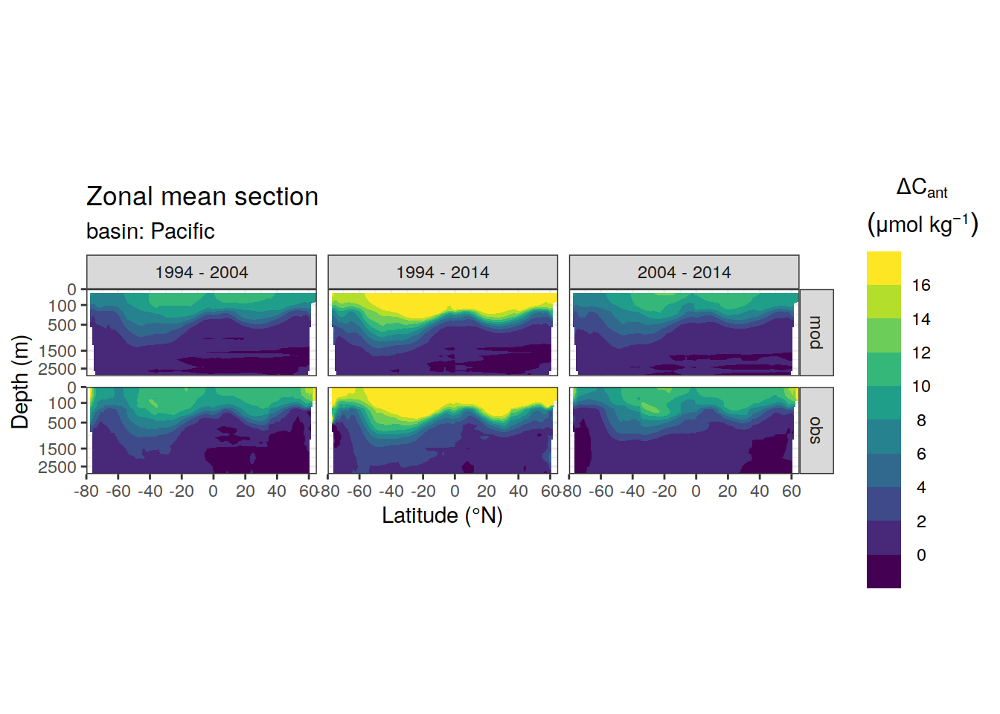
4.2 Mean bias
dcant_zonal_ensemble_bias <- full_join(
dcant_zonal_ensemble %>%
filter(data_source == "mod") %>%
select(lat, depth, basin_AIP, period, dcant_ensemble_mean, dcant_sd),
dcant_zonal_all %>%
filter(data_source == "mod_truth",
MLR_basins == unique(dcant_zonal_all$MLR_basins)[1]) %>%
select(lat, depth, basin_AIP, period, dcant_mod_truth = dcant)
)Joining, by = c("lat", "depth", "basin_AIP", "period")dcant_zonal_ensemble_bias <- dcant_zonal_ensemble_bias %>%
mutate(dcant_mean_bias = dcant_ensemble_mean - dcant_mod_truth)
dcant_zonal_ensemble_bias %>%
group_by(basin_AIP) %>%
group_split() %>%
# head(1) %>%
map(
~ p_section_zonal_continous_depth(
df = .x,
var = "dcant_mean_bias",
col = "divergent",
plot_slabs = "n",
subtitle_text = paste("basin:",
unique(.x$basin_AIP)
)
) +
facet_grid(. ~ period)
)[[1]]Warning: Removed 3366 rows containing non-finite values (stat_contour_filled).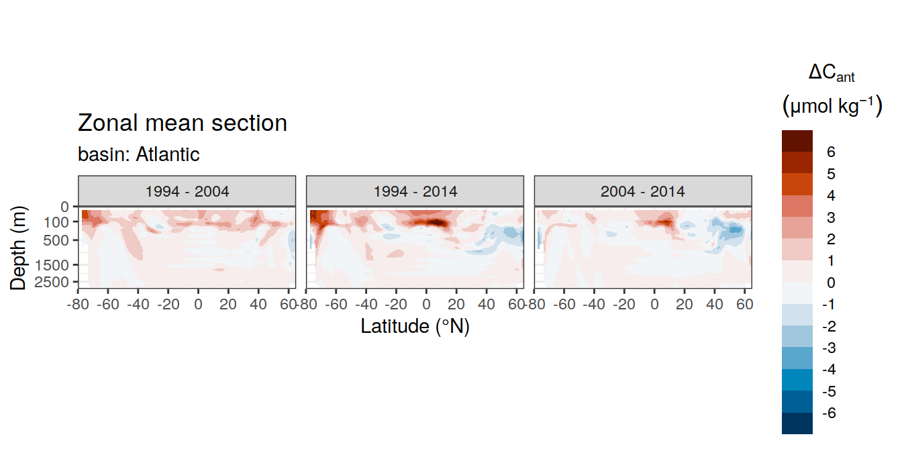
[[2]]Warning: Removed 2223 rows containing non-finite values (stat_contour_filled).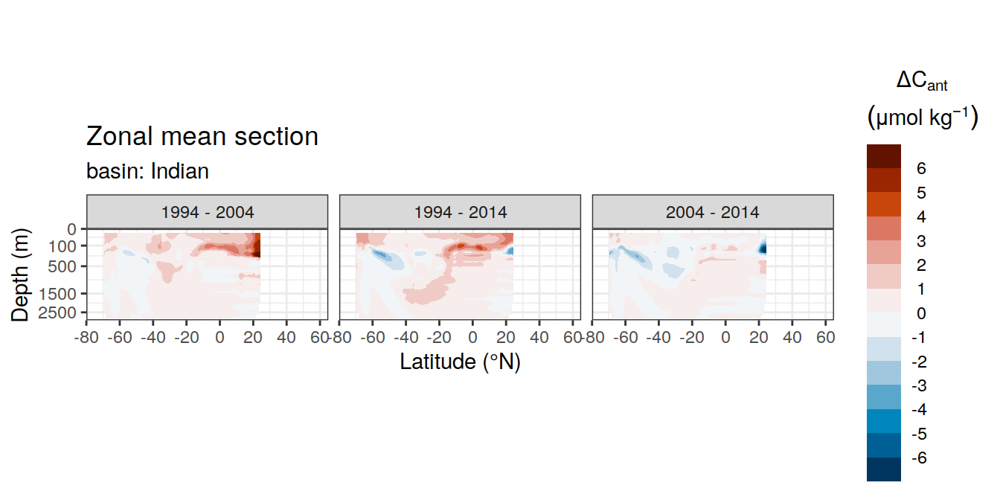
[[3]]Warning: Removed 3702 rows containing non-finite values (stat_contour_filled).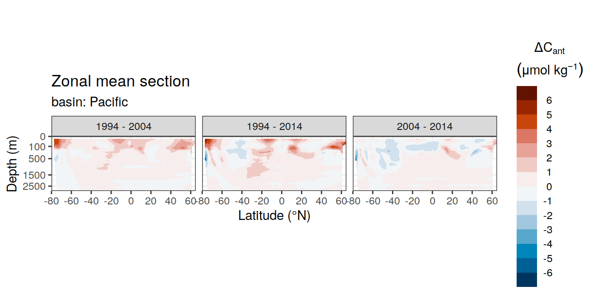
4.2.1 Density distribution
dcant_zonal_bias_all %>%
ggplot() +
scale_color_manual(values = c("red", "grey")) +
geom_vline(xintercept = 0) +
geom_density(aes(dcant_bias, group = MLR_basins, col = "Individual")) +
geom_density(data = dcant_zonal_ensemble_bias,
aes(dcant_mean_bias, col = "Ensemble")) +
facet_grid(period ~.) +
coord_cartesian(xlim = c(-10, 10))Warning: Removed 254 rows containing non-finite values (stat_density).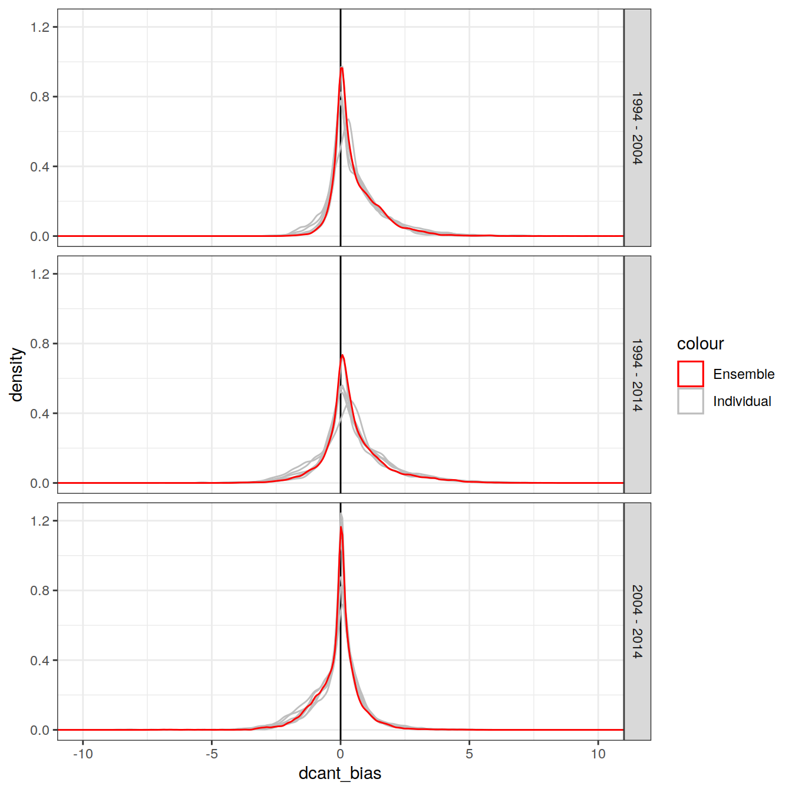
| Version | Author | Date |
|---|---|---|
| de557de | jens-daniel-mueller | 2022-01-28 |
4.3 Mean depth layer budgets
dcant_lat_grid_ensemble %>%
ggplot(aes(lat_grid, dcant_mean)) +
geom_hline(yintercept = 0) +
geom_col(position = "dodge",
fill = "grey80",
col = "grey20") +
geom_errorbar(aes(
ymin = dcant_min,
ymax = dcant_max
),
col = "grey20",
width = 0) +
scale_color_brewer(palette = "Set1") +
coord_flip() +
scale_fill_brewer(palette = "Dark2") +
facet_grid(data_source ~ period)4.4 Standard deviation
dcant_zonal_ensemble %>%
group_by(basin_AIP) %>%
group_split() %>%
# head(1) %>%
map(
~ p_section_zonal_continous_depth(
df = .x,
var = "dcant_sd",
breaks = c(seq(0,4,0.4), Inf),
plot_slabs = "n",
subtitle_text = paste("basin:",
unique(.x$basin_AIP))
) +
facet_grid(data_source ~ period)
)[[1]]Warning: Removed 4953 rows containing non-finite values (stat_contour_filled).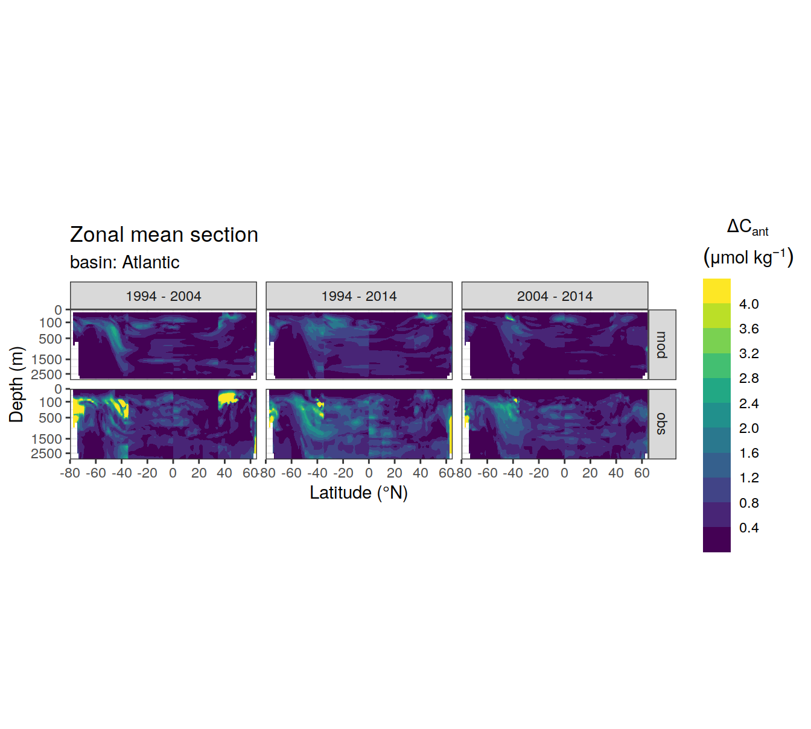
[[2]]Warning: Removed 3282 rows containing non-finite values (stat_contour_filled).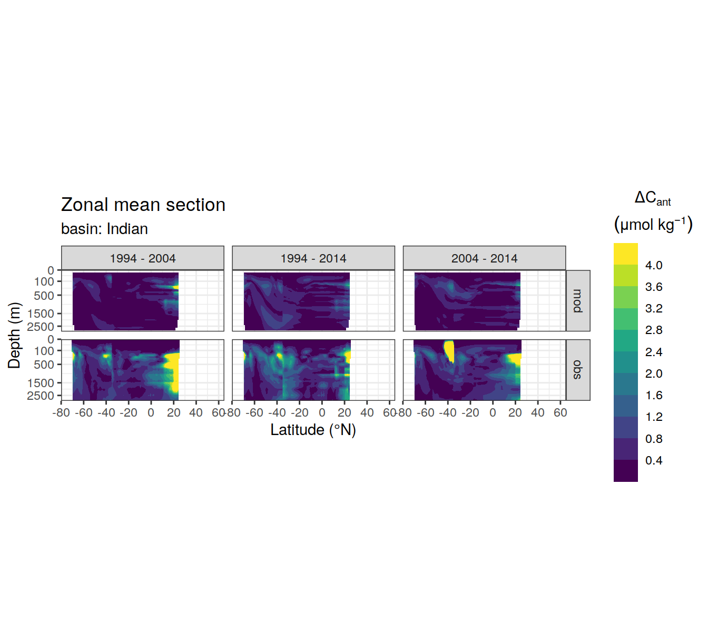
[[3]]Warning: Removed 5499 rows containing non-finite values (stat_contour_filled).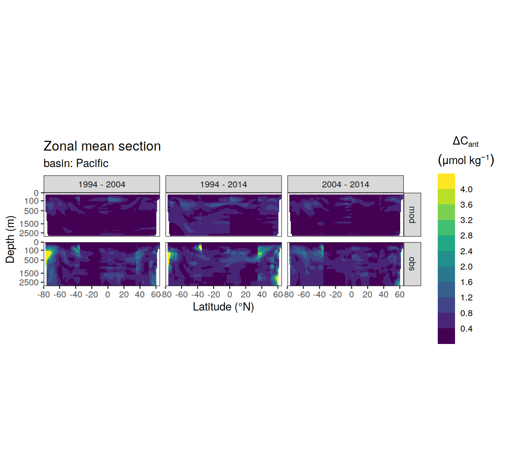
4.5 SD as uncertainty
uncertainty_grid <- dcant_zonal_ensemble %>%
filter(dcant_sd > sd_uncertainty_limit) %>%
distinct(depth, lat, data_source, period, basin_AIP)
uncertainty_grid <- uncertainty_grid %>%
mutate(
lat_grid = cut(lat, seq(-90, 90, 5), seq(-87.5, 87.5, 5)),
lat_grid = as.numeric(as.character(lat_grid)),
depth_grid = cut(depth, seq(0, 1e4, 500), seq(250, 1e4, 500)),
depth_grid = as.numeric(as.character(depth_grid))
) %>%
distinct(depth_grid, lat_grid, data_source, period, basin_AIP)
uncertainty_grid %>%
filter(data_source == "obs") %>%
ggplot() +
geom_point(aes(lat_grid, depth_grid),
shape = 3) +
facet_grid(basin_AIP ~ period) +
scale_y_reverse()Warning: Removed 1 rows containing missing values (geom_point).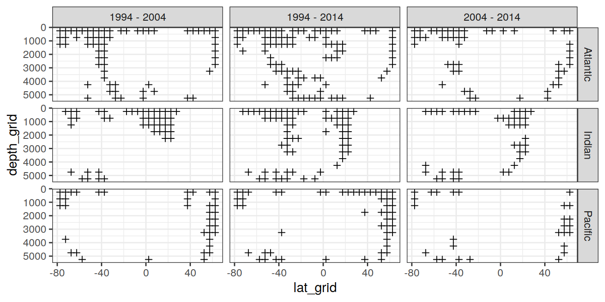
| Version | Author | Date |
|---|---|---|
| de557de | jens-daniel-mueller | 2022-01-28 |
4.6 SD vs bias
dcant_zonal_ensemble_bias %>%
ggplot(aes(dcant_mean_bias, dcant_sd)) +
geom_bin2d() +
scale_fill_viridis_c() +
facet_grid(basin_AIP ~ period)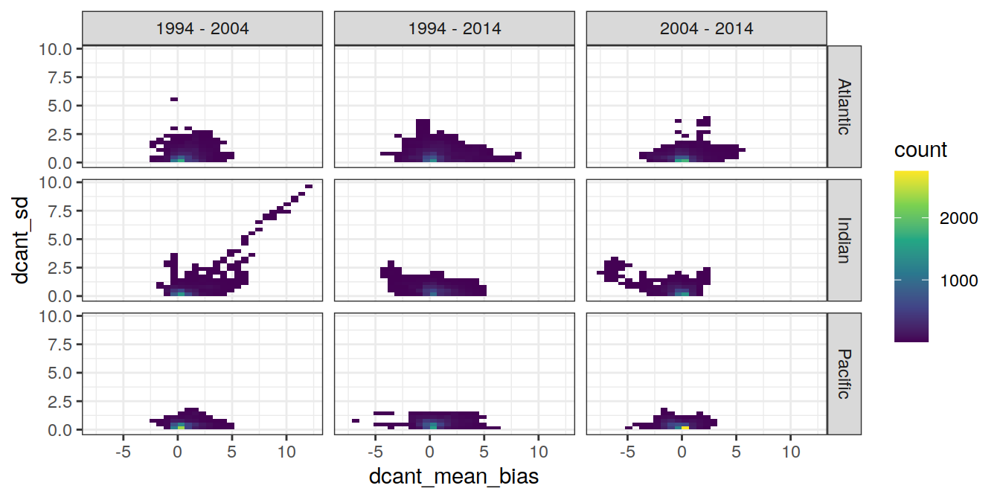
| Version | Author | Date |
|---|---|---|
| de557de | jens-daniel-mueller | 2022-01-28 |
dcant_zonal_ensemble_bias %>%
select(dcant_ensemble_mean, dcant_mean_bias, period) %>%
pivot_longer(dcant_ensemble_mean:dcant_mean_bias,
names_to = "estimate",
values_to = "value") %>%
ggplot(aes(value, col=estimate, linetype = period)) +
scale_color_brewer(palette = "Set1") +
geom_density()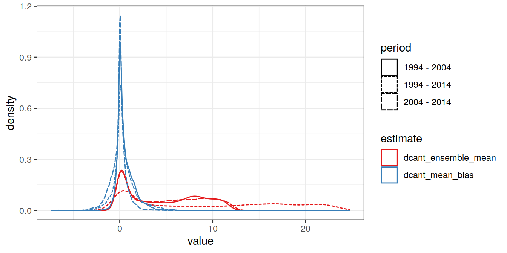
| Version | Author | Date |
|---|---|---|
| de557de | jens-daniel-mueller | 2022-01-28 |
dcant_zonal_ensemble %>%
ggplot(aes(dcant_sd)) +
geom_histogram() +
facet_grid(data_source ~ period) +
coord_cartesian(ylim = c(0,50))`stat_bin()` using `bins = 30`. Pick better value with `binwidth`.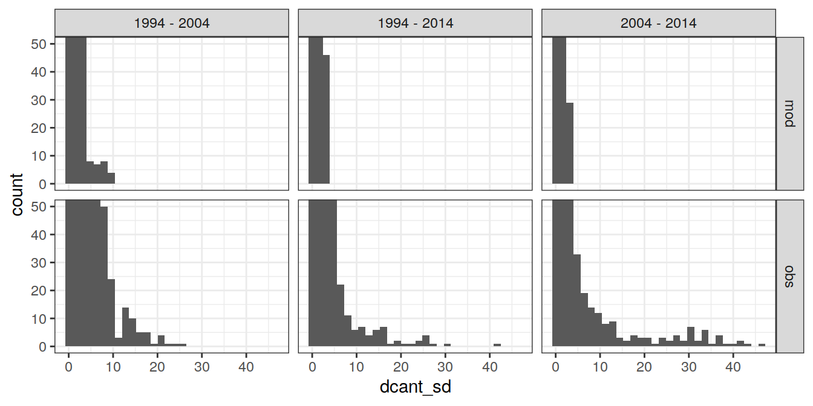
| Version | Author | Date |
|---|---|---|
| de557de | jens-daniel-mueller | 2022-01-28 |
4.7 Composed figure
uncertainty_grid <- uncertainty_grid %>%
filter(data_source == "obs",
period != "1994 - 2014")
p_zonal_ensemble <- dcant_zonal_ensemble %>%
filter(data_source == "obs",
period != "1994 - 2014") %>%
p_section_zonal_continous_depth(var = "dcant_ensemble_mean",
plot_slabs = "n",
title_text = NULL) +
geom_point(data = uncertainty_grid,
aes(lat_grid, depth_grid),
shape = 3,
col = "white") +
facet_grid(basin_AIP ~ period,
switch = "y") +
theme(legend.position = "left",
strip.background.y = element_blank(),
strip.text.y = element_blank())
p_profiles <-
dcant_profile_all %>%
arrange(depth) %>%
filter(period != "1994 - 2014",
data_source == "obs") %>%
ggplot(aes(
dcant,
depth,
col = period,
fill = "grey80",
group = interaction(MLR_basins, period)
)) +
geom_hline(yintercept = params_global$inventory_depth_standard) +
geom_vline(xintercept = 0) +
geom_path() +
scale_y_reverse(name = "Depth (m)",
limits = c(5000,0)) +
scale_x_continuous(name = expression(Delta * C[ant] ~ (µmol~kg^{-1}))) +
coord_cartesian(expand = 0) +
scale_color_brewer(palette = "Set1") +
facet_grid(basin_AIP ~.) +
theme(legend.position = "top",
legend.direction = "vertical",
legend.title = element_blank(),
strip.background = element_blank(),
strip.text = element_blank(),
axis.text.y = element_blank(),
axis.title.y = element_blank(),
axis.ticks.y = element_blank())
p_layer_budget <- dcant_budget_basin_AIP_layer_ensemble %>%
filter(data_source == "obs",
period != "1994 - 2014") %>%
mutate(depth =
as.numeric(str_split(inv_depth, " - ", simplify = TRUE)[, 1]) + 250) %>%
filter(depth < 5000) %>%
ggplot(aes(dcant_mean, inv_depth, col = period)) +
geom_col(position = "dodge",
orientation = "y",
fill = "grey80") +
geom_errorbar(
aes(xmin = dcant_min,
xmax = dcant_max),
width = 0,
position = position_dodge(width = 0.9)
) +
scale_color_brewer(palette = "Set1", guide = "none") +
scale_x_continuous(
limits = c(0, NA),
expand = c(0, 0),
name = expression(Delta * C[ant] ~ (PgC))
) +
scale_y_discrete(name = "Depth intervals (m)",
limits = rev) +
facet_grid(basin_AIP ~ .) +
theme(legend.position = "top",
legend.title = element_blank(),
axis.text.y = element_blank(),
axis.title.y = element_blank(),
axis.ticks.y = element_blank())
p_zonal_ensemble + p_profiles + p_layer_budget +
plot_layout(widths = c(5,1,1)) +
plot_annotation(tag_levels = 'a')Warning: Removed 2962 rows containing non-finite values (stat_contour_filled).Warning: Removed 61 rows containing missing values (geom_point).Warning: Removed 36 row(s) containing missing values (geom_path).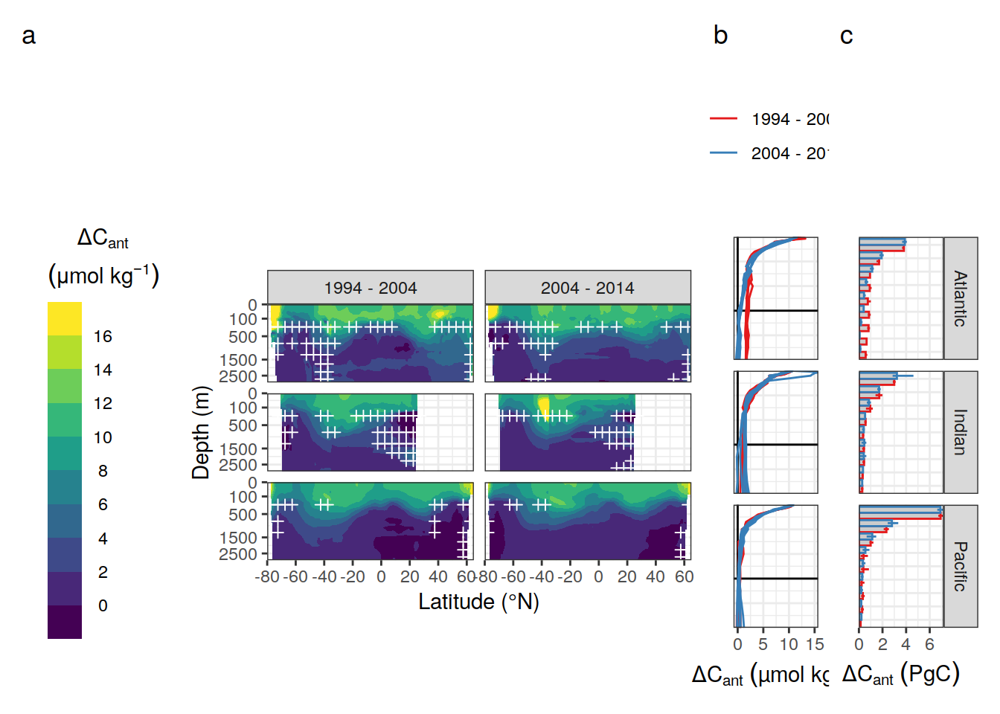
# ggsave("output/publication/Fig_zonal_mean.png",
# width=15.25,
# height=9.27)5 Cases vs ensemble
5.1 Offset from mean
dcant_zonal_all <- full_join(dcant_zonal_all %>% select(-dcant_sd),
dcant_zonal_ensemble)Joining, by = c("data_source", "lat", "depth", "basin_AIP", "period")dcant_zonal_all <- dcant_zonal_all %>%
mutate(dcant_offset = dcant - dcant_ensemble_mean)
legend_title <- expression(atop(Delta * C[ant, offset],
(mu * mol ~ kg ^ {
-1
})))
dcant_zonal_all %>%
filter(data_source %in% c("mod", "obs")) %>%
group_by(basin_AIP, data_source) %>%
group_split() %>%
# head(1) %>%
map(
~ p_section_zonal_continous_depth(
df = .x,
var = "dcant_offset",
col = "divergent",
plot_slabs = "n",
subtitle_text = paste("basin:",
unique(.x$basin_AIP),
"| data_source",
unique(.x$data_source))
) +
facet_grid(MLR_basins ~ period)
)[[1]]Warning: Removed 20164 rows containing non-finite values (stat_contour_filled).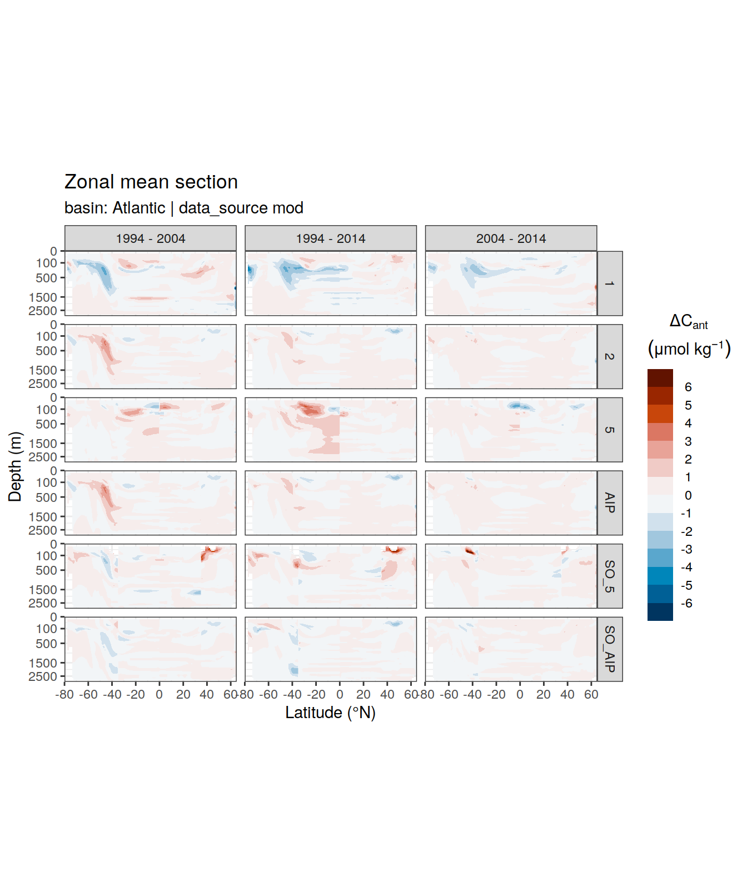
[[2]]Warning: Removed 9522 rows containing non-finite values (stat_contour_filled).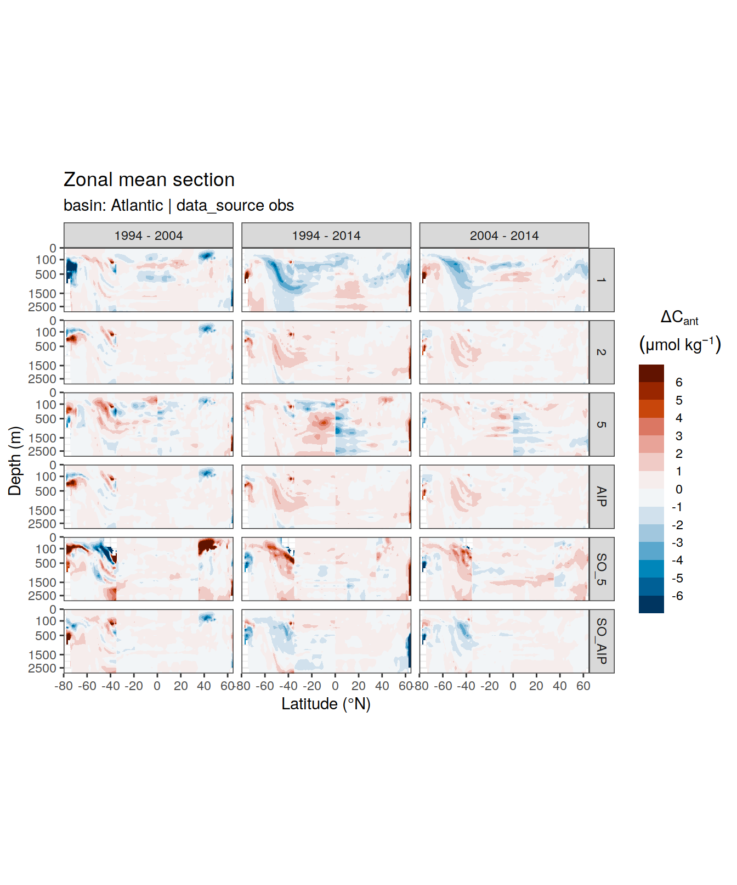
[[3]]Warning: Removed 13338 rows containing non-finite values (stat_contour_filled).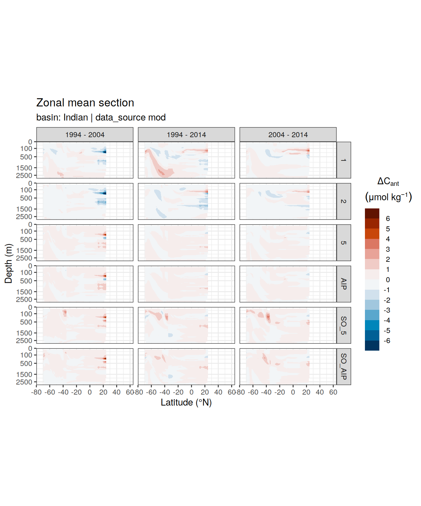
[[4]]Warning: Removed 6354 rows containing non-finite values (stat_contour_filled).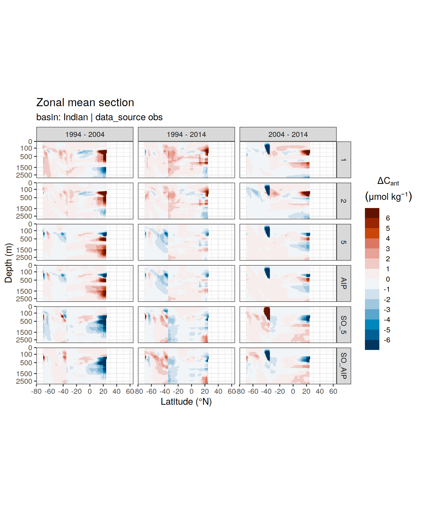
[[5]]Warning: Removed 22212 rows containing non-finite values (stat_contour_filled).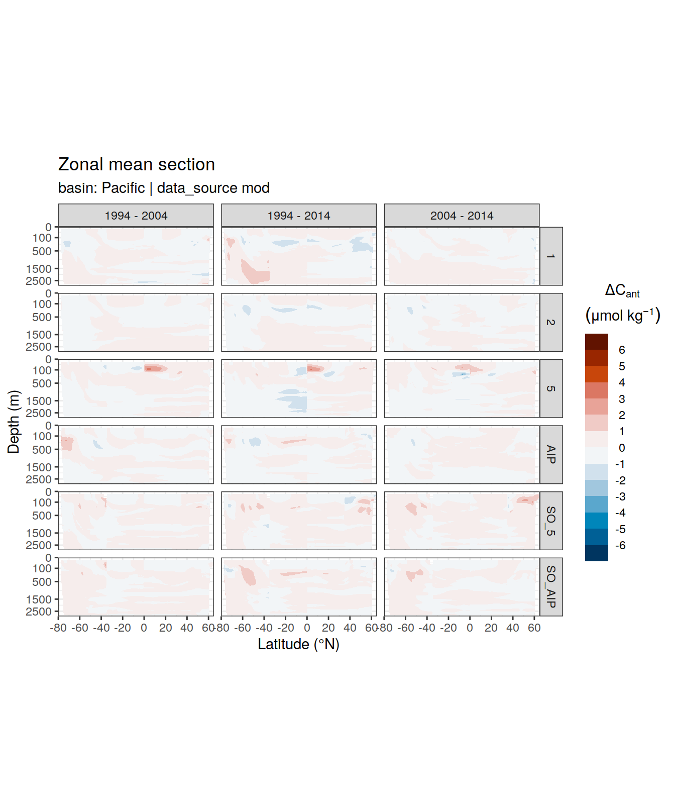
[[6]]Warning: Removed 10782 rows containing non-finite values (stat_contour_filled).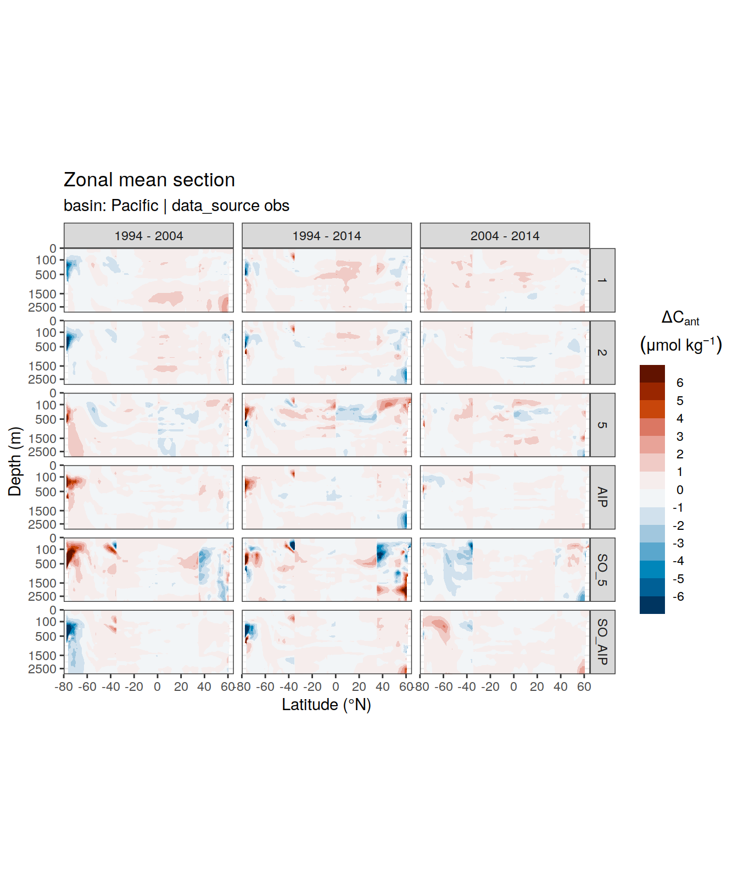
sessionInfo()R version 4.1.2 (2021-11-01)
Platform: x86_64-pc-linux-gnu (64-bit)
Running under: openSUSE Leap 15.3
Matrix products: default
BLAS: /usr/local/R-4.1.2/lib64/R/lib/libRblas.so
LAPACK: /usr/local/R-4.1.2/lib64/R/lib/libRlapack.so
locale:
[1] LC_CTYPE=en_US.UTF-8 LC_NUMERIC=C
[3] LC_TIME=en_US.UTF-8 LC_COLLATE=en_US.UTF-8
[5] LC_MONETARY=en_US.UTF-8 LC_MESSAGES=en_US.UTF-8
[7] LC_PAPER=en_US.UTF-8 LC_NAME=C
[9] LC_ADDRESS=C LC_TELEPHONE=C
[11] LC_MEASUREMENT=en_US.UTF-8 LC_IDENTIFICATION=C
attached base packages:
[1] stats graphics grDevices utils datasets methods base
other attached packages:
[1] colorspace_2.0-2 marelac_2.1.10 shape_1.4.6 ggforce_0.3.3
[5] metR_0.11.0 scico_1.3.0 patchwork_1.1.1 collapse_1.7.0
[9] forcats_0.5.1 stringr_1.4.0 dplyr_1.0.7 purrr_0.3.4
[13] readr_2.1.1 tidyr_1.1.4 tibble_3.1.6 ggplot2_3.3.5
[17] tidyverse_1.3.1 workflowr_1.7.0
loaded via a namespace (and not attached):
[1] fs_1.5.2 bit64_4.0.5 gsw_1.0-6 lubridate_1.8.0
[5] RColorBrewer_1.1-2 httr_1.4.2 rprojroot_2.0.2 tools_4.1.2
[9] backports_1.4.1 bslib_0.3.1 utf8_1.2.2 R6_2.5.1
[13] DBI_1.1.2 withr_2.4.3 tidyselect_1.1.1 processx_3.5.2
[17] bit_4.0.4 compiler_4.1.2 git2r_0.29.0 cli_3.1.1
[21] rvest_1.0.2 xml2_1.3.3 isoband_0.2.5 labeling_0.4.2
[25] sass_0.4.0 scales_1.1.1 checkmate_2.0.0 SolveSAPHE_2.1.0
[29] callr_3.7.0 digest_0.6.29 rmarkdown_2.11 oce_1.5-0
[33] pkgconfig_2.0.3 htmltools_0.5.2 highr_0.9 dbplyr_2.1.1
[37] fastmap_1.1.0 rlang_0.4.12 readxl_1.3.1 rstudioapi_0.13
[41] jquerylib_0.1.4 generics_0.1.1 farver_2.1.0 jsonlite_1.7.3
[45] vroom_1.5.7 magrittr_2.0.1 Rcpp_1.0.8 munsell_0.5.0
[49] fansi_1.0.2 lifecycle_1.0.1 stringi_1.7.6 whisker_0.4
[53] yaml_2.2.1 MASS_7.3-55 grid_4.1.2 parallel_4.1.2
[57] promises_1.2.0.1 crayon_1.4.2 haven_2.4.3 hms_1.1.1
[61] seacarb_3.3.0 knitr_1.37 ps_1.6.0 pillar_1.6.4
[65] reprex_2.0.1 glue_1.6.0 evaluate_0.14 getPass_0.2-2
[69] data.table_1.14.2 modelr_0.1.8 vctrs_0.3.8 tzdb_0.2.0
[73] tweenr_1.0.2 httpuv_1.6.5 cellranger_1.1.0 gtable_0.3.0
[77] polyclip_1.10-0 assertthat_0.2.1 xfun_0.29 broom_0.7.11
[81] later_1.3.0 viridisLite_0.4.0 ellipsis_0.3.2 here_1.0.1